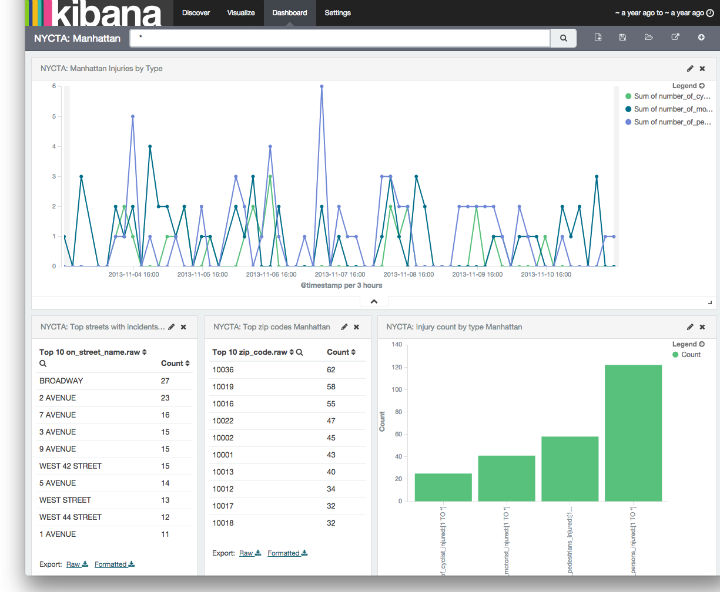
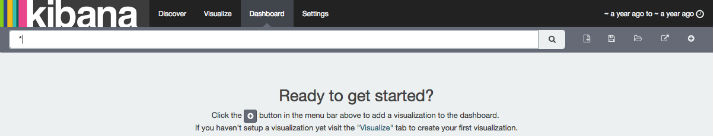
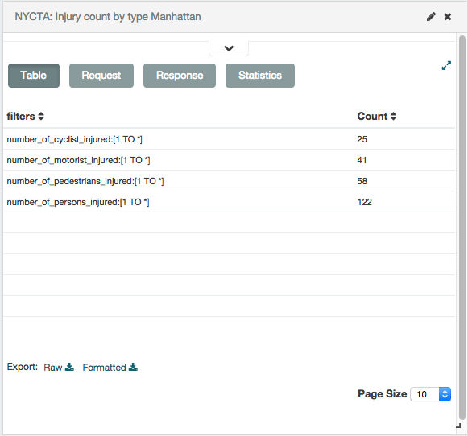
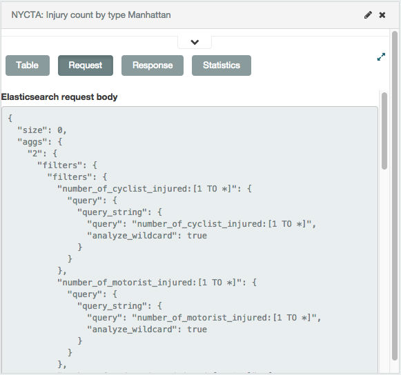
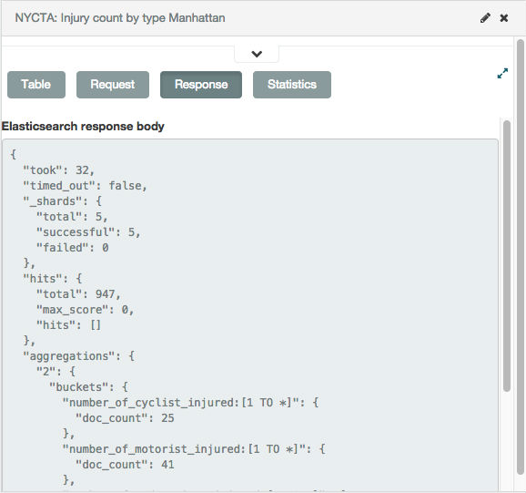
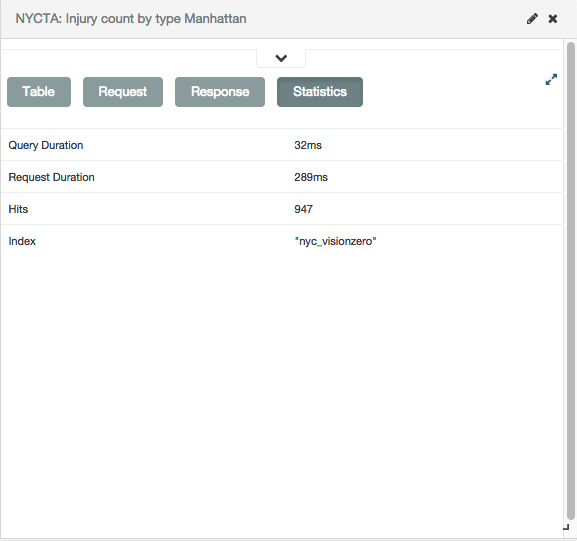

Dashboardedit
A Kibana dashboard displays a set of saved visualizations in groups that you can arrange freely. You can save a dashboard to share or reload at a later time.
Sample dashboard. 
Getting Startededit
You need at least one saved visualization to use a dashboard.
Building a New Dashboardedit
The first time you click the Dashboard tab, Kibana displays an empty dashboard.

Build your dashboard by adding visualizations.
Adding Visualizations to a Dashboardedit
To add a visualization to the dashboard, click the Add Visualization button in the toolbar panel. Select a saved visualization from the list. You can filter the list of visualizations by typing a filter string into the Visualization Filter field.
The visualization you select appears in a container on your dashboard.
If you see a message about the container’s height or width being too small, resize the container.
Saving Dashboardsedit
To save the dashboard, click the Save Dashboard button in the toolbar panel, enter a name for the dashboard in the Save As field, and click the Save button.
Loading a Saved Dashboardedit
Click the Load Saved Dashboard button to display a list of existing dashboards. The saved dashboard selector includes a text field to filter by dashboard name and a link to the Object Editor for managing your saved dashboards. You can also access the Object Editor by clicking Settings > Edit Saved Objects.
Sharing Dashboardsedit
You can share dashboards with other users. You can share a direct link to the Kibana dashboard or embed the dashboard in your Web page.
A user must have Kibana access in order to view embedded dashboards.
Click the Share button to display HTML code to embed the dashboard in another Web page, along with a direct link to the dashboard. Click the copy button next to either option to copy the code or the link to your clipboard.
Embedding Dashboardsedit
To embed a dashboard, copy the embed code from the Share display into your external web application.
Customizing Dashboard Elementsedit
The visualizations in your dashboard are stored in resizable containers that you can arrange on the dashboard. This section discusses customizing these containers.
Moving Containersedit
Click and hold a container’s header to move the container around the dashboard. Other containers will shift as needed to make room for the moving container. Release the mouse button to confirm the container’s new location.
Resizing Containersedit
Move the cursor to the bottom right corner of the container until the cursor changes to point at the corner. After the cursor changes, click and drag the corner of the container to change the container’s size. Release the mouse button to confirm the new container size.
Removing Containersedit
Click the x icon at the top right corner of a container to remove that container from the dashboard. Removing a container from a dashboard does not delete the saved visualization in that container.
Viewing Detailed Informationedit
To display the raw data behind the visualization, click the bar at the bottom of the container. Tabs with detailed information about the raw data replace the visualization, as in this example:
Table. A representation of the underlying data, presented as a paginated data grid. You can sort the items in the table by clicking on the table headers at the top of each column. 
Request. The raw request used to query the server, presented in JSON format. 
Response. The raw response from the server, presented in JSON format. 
Statistics. A summary of the statistics related to the request and the response, presented as a data grid. The data grid includes the query duration, the request duration, the total number of records found on the server, and the index pattern used to make the query. 
Changing the Visualizationedit
Click the Edit button at the top right of a container to open the visualization in the Visualize page.